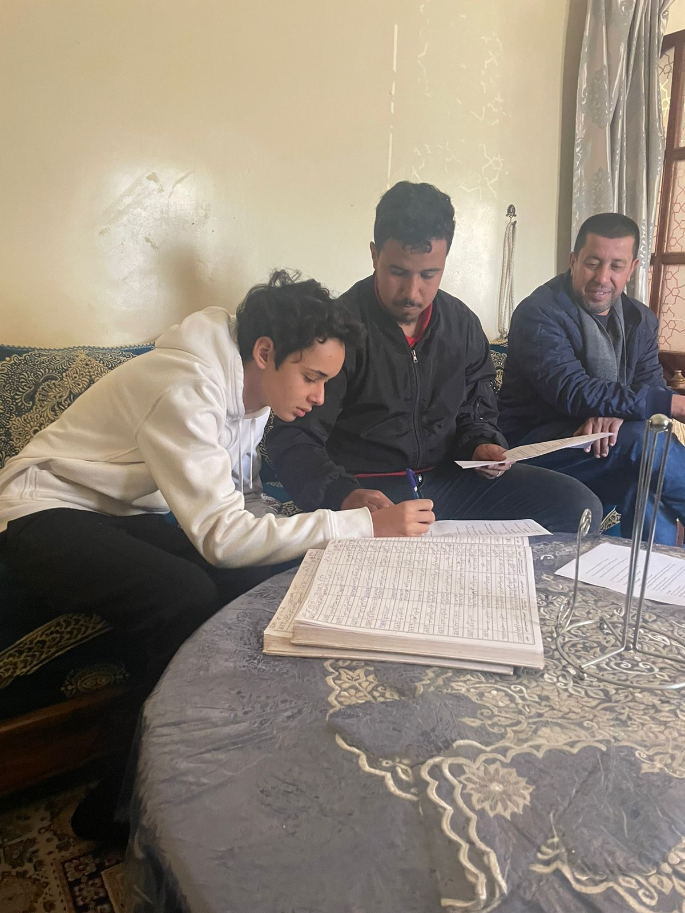
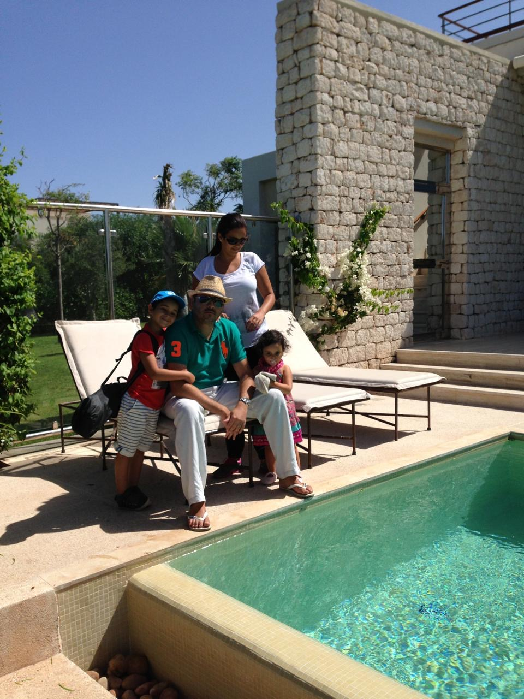
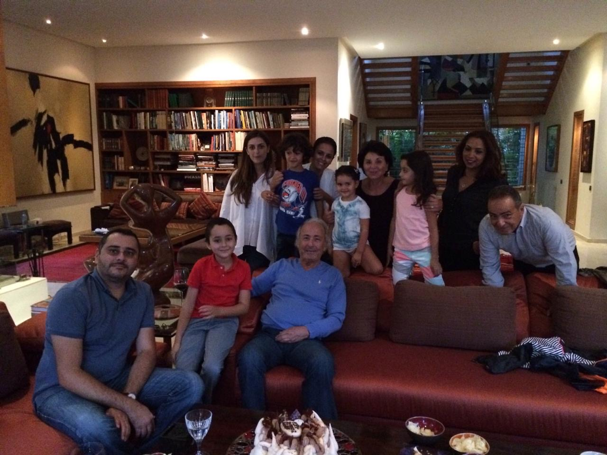
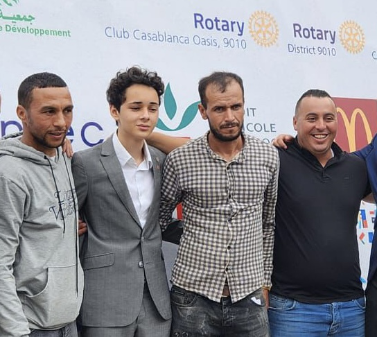
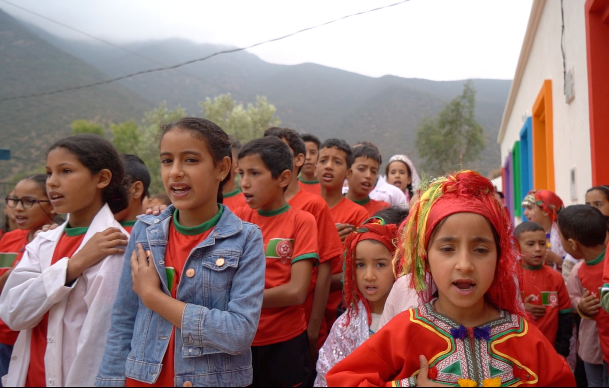

Morocco
Roots and responsibility
From Morocco to a global systems platform
Berkeley
Platform and leverage
Global
Systems and scale
Morocco / UC Berkeley / Impact / Leadership
There are 42 cases like mine in the world.
They said no.
I built it anyway.
I build impact where others see limits.
NACER KADIRI
I build impact where others see limits.
Moroccan student at UC Berkeley. I build impact by turning adversity into systems, capital, and real outcomes for communities that were never meant to be centered.
Raised
$500,000+
Beneficiaries
20,000+
People mobilized
500+
Origin Story
Break the prophecy.
Make the story concrete enough that it cannot be dismissed.
Grounded narrative
Forty-two cases worldwide became the first lesson in what limits really are.
Early in life, a diagnosis from Dr. Arnoux placed me inside a reality so rare it was counted globally: 42 known cases. That number was not just medical. It was a projection - a version of my life already written by others.
It became my first confrontation with limits, and my first understanding that people often confuse rarity with impossibility.
Years later, when the Morocco earthquake struck near Ouirgane, the story stopped being personal. It became public. We chose Tassa Ouirgane because the relationship already existed. Rebuilding the school became the most concrete answer to what leadership should look like under pressure.
42 cases worldwide
Dr. Arnoux reference
Morocco earthquake
Tassa Ouirgane school
42 cases worldwide
A medical reality this rare taught me early that most limits are structural before they are personal.
Dr. Arnoux
"There are 42 cases like yours in the world."
It wasn't said as a limitation.
But it became one the moment I realized how easily a number can define expectations.
Who gets to decide what is possible?
Morocco earthquake
The Al Haouz earthquake made something clear immediately: in a village, a school is not just a building - it is the only place where the future is imagined.
That is why rebuilding it became the idea.
Tassa Ouirgane school
A ruined site became a modern learning space and a public proof point for youth-led execution.
It's impossible.
You're too young.
Be realistic.
This won't work.
Go back to school.
You don't have legitimacy.
This is not your place.
The No
"They didn't say no to the project. They said no to me."
That moment became the blueprint: convert doubt into evidence, then turn evidence into momentum.
How I Lead
This is how I operate when leadership moves from idea to reality.
Four principles guide how challenge becomes trust, how trust becomes execution, and how execution becomes scale.
01 / 04
Brand Star
These are the traits that define how I lead and make decisions.
Movement builder
Active Trait
Ambitious
Sets a direction larger than the resources already in the room.

Uses local action and global institutions in the same strategic sentence.
Ikigai
Where purpose, skill, need, and value intersect.
Purpose in motion
What I Love
Building impact ecosystems, helping people rise, and turning possibility into public momentum.
Impact Metrics
Impact is not a narrative. It is something you can measure.
$0
Raised
0
Beneficiaries
0
People mobilized
0
Media interviews
0
UN invitations
Timeline
Every step added pressure, clarity, and responsibility.
Each milestone carries an image, a date, and the weight it added to the story.

Casablanca The beginning of the arcMilestone 01
Born
October 25, 2007
Born in Casablanca, with a story that would remain deeply rooted in Morocco even as its platform became increasingly global.
Interactive World Map
The geography of the work is part of the story.
Click each point to see how local action, regional leadership, and global visibility connect across one map.


Birthplace Where the story beginsSelected point
Casablanca
Casablanca is the origin point: the city where the story starts and where early ambition first takes public shape.
Kind Leadership
Human stories carry the emotional proof behind the strategy.

Worker story Respect on the ground is part of the build.Worker Story
Dignity on the construction site
On the construction site, I worked alongside the workers rebuilding the school.
This is a photo from that moment - where leadership is not about directing, but about sharing responsibility.

Rayane story Every metric contains a future.Rayane Story
One child inside the number
Rayane was eight years old. He had lost his brother in the earthquake.
He asked for my badge because I inspired him.
That moment made something clear: impact is not about scale - it is about what one person feels directly.
Rooted in Morocco
Morocco is where everything starts - and where everything I build is meant to return.
The vision is global. The foundation remains local: community, resilience, and the responsibility to build from where I come from.
For Youth
Now it's your turn.
You do not need to wait for age, permission, or perfect conditions to start building what your community needs.
I was told it was impossible.
So will you.
Now it's your turn.
Start before perfect
Action creates credibility faster than overthinking ever will.
Build with people
Movements last when they are shared, not performed alone.
Make the work real
Let your ideas touch lives, not just timelines and speeches.
Future
The next chapter is about platform, systems, and institution-level reach.

Berkeley
Platform
UC Berkeley is a platform - bringing together networks, exposure, and systems thinking to move from projects to institutions.
Global systems
Direction
The focus is shifting from visible action to building systems that operate across regions, sectors, and institutions.
MEEF
Institutional horizon
MEEF represents the next level - structuring influence, unlocking capital, and scaling impact across the MENA region.
Moments in Motion
Defining moments
A moving gallery of defining scenes: field action, public stages, rebuilding, and the moments that shaped the voice behind the work.
01/04
Final Statement
I build movements where others see limits.
Built from Morocco. Sharpened at Berkeley. Designed for global impact.
Back to top